PRESENTATION
Presentation
The project presentation will be embedded here.
01 · PROJECT OVERVIEW
Project Overview
This project analyzes customer characteristics and spending behavior to discover groups with similar patterns.
Rather than relying only on predefined demographic categories, clustering is used to identify naturally occurring customer segments.
02 · BUSINESS QUESTION
Business Question
Can customers be grouped into meaningful segments based on their demographic and spending behavior?
Answering this question can support more focused targeting, personalization, campaign design, and marketing resource allocation.
03 · DATASET
From Raw Data to Analysis
This project begins with the original customer-level dataset before preprocessing, modeling, and segmentation.
04 · DATA EXPLORATION
Exploring Customer Behavior
The analysis first examined the structure and characteristics of the dataset before applying clustering.
Distribution plots, boxplots, and relationship views were used to understand individual variables, spending behavior, demographic patterns, and potential outliers.
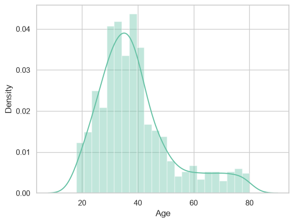
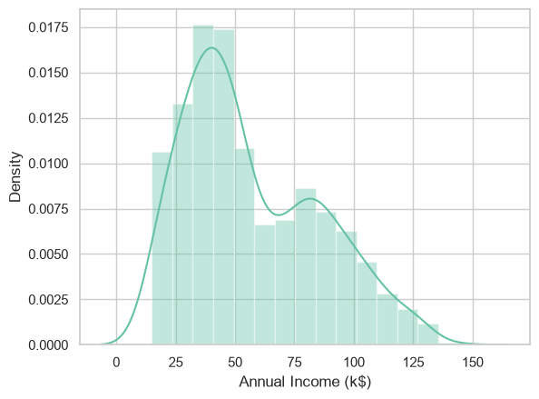
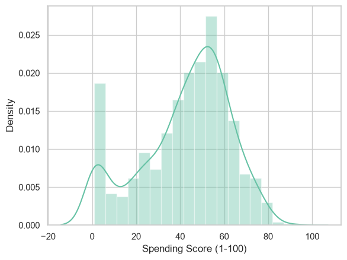
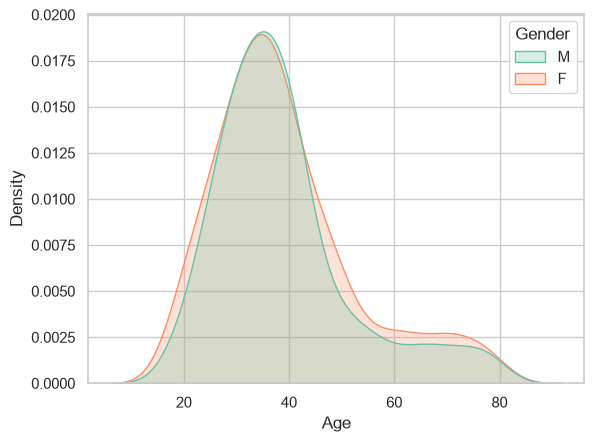
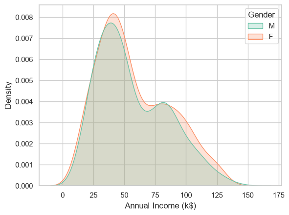
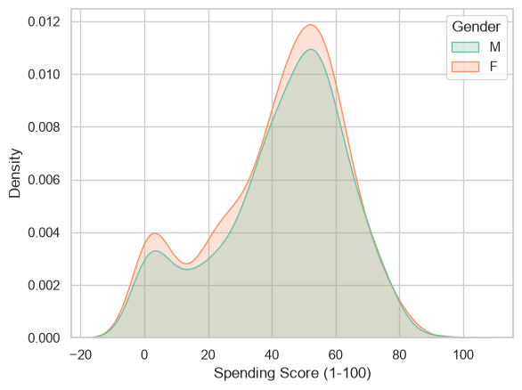
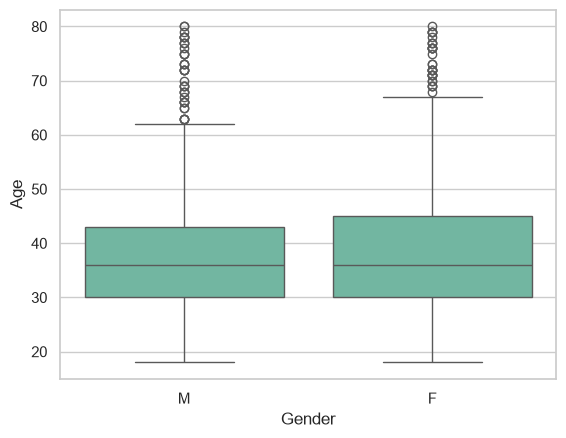

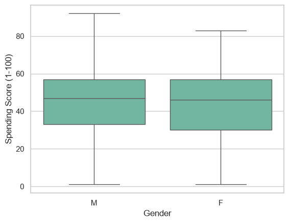
05 · MULTIVARIATE ANALYSIS
Understanding Relationships
Bivariate and multivariate analysis was used to understand how customer attributes interact before clustering.
Pairwise relationships and correlation analysis helped establish the analytical context for feature preparation and model development.
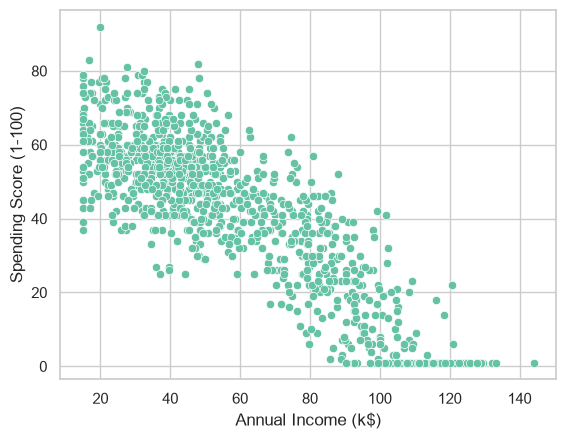
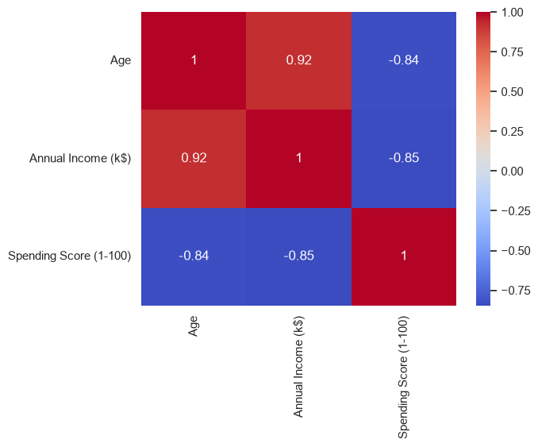
06 · CLUSTERING APPROACH
K-Means Clustering
K-Means groups observations by similarity and assigns each customer to a cluster based on the prepared feature space.
Multiple values of K were evaluated rather than choosing the number of clusters arbitrarily.
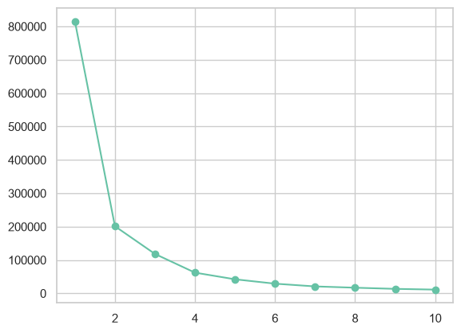
The elbow method was used to evaluate an appropriate number of customer clusters before finalizing the K-Means model.
Prepare
Prepare the customer features.
Evaluate
Evaluate candidate cluster counts.
Select
Select an appropriate number of clusters.
Fit
Fit the K-Means model.
Profile
Profile the resulting customer groups.
07 · CUSTOMER SEGMENTS
Final Customer Segments
Customers were segmented based on Annual Income and Spending Score to identify distinct behavioral groups.

Each cluster represents a distinct combination of customer income and spending behavior.
08 · CLUSTER PROFILING
From Clusters to Insights
Clustering is only useful when the resulting groups can be translated into meaningful customer profiles.
The final K-Means solution identifies five distinct customer segments based primarily on annual income and spending behavior, creating a practical framework for targeted marketing decisions.
Five customer segments represent distinct combinations of customer income and spending behavior.
Segment 01
Cluster 0Key characteristics
Mid-income, mid-spending customers with relatively balanced purchasing behavior.
Behavioral interpretation
A broad mainstream segment with neither unusually high nor unusually low spending behavior.
Marketing implication
Maintain engagement with relevant offers, loyalty incentives, and personalized recommendations to increase spending frequency and retention.
Segment 02
Cluster 1Key characteristics
High-income customers with very low spending scores.
Behavioral interpretation
High purchasing capacity but weak current engagement with the business.
Marketing implication
Use premium positioning, personalized outreach, exclusive offers, and targeted re-engagement campaigns to convert purchasing potential into actual spending.
Segment 03
Cluster 2Key characteristics
Lower-income customers with high spending scores.
Behavioral interpretation
Highly engaged / high-spending customers despite having relatively lower income.
Marketing implication
Prioritize retention, loyalty rewards, personalized recommendations, and repeat-purchase incentives because this segment demonstrates strong spending behavior.
Segment 04
Cluster 3Key characteristics
Above-average income with moderate spending behavior.
Behavioral interpretation
Customers have relatively strong purchasing capacity but are not among the highest-spending segment.
Marketing implication
Use targeted upselling, cross-selling, and personalized product recommendations to increase customer value.
Segment 05
Cluster 4Key characteristics
High-income customers with relatively low spending scores.
Behavioral interpretation
Affluent customers whose current spending does not match their purchasing potential.
Marketing implication
Develop premium engagement strategies, personalized recommendations, and high-value offers designed to increase spending and relationship depth.
BUSINESS RECOMMENDATIONS
Encourage repeat purchases through loyalty programs and personalized recommendations.
Target high-income, low-spending customers with premium offers and personalized re-engagement.
Prioritize retention and loyalty because this group shows strong spending behavior.
Use upselling and cross-selling to move moderate spenders toward higher-value behavior.
Create premium, personalized campaigns to convert purchasing capacity into stronger spending.
09 · KEY FINDINGS
Key Findings
Income does not guarantee engagement
High-income customers are not necessarily the highest spenders. Clusters 1 and 4 combine strong purchasing capacity with low spending, revealing an important engagement gap.
Customer value varies sharply by segment
Cluster 2 stands out for high spending despite lower income, while Clusters 1 and 4 show the opposite pattern. Income and spending therefore identify meaningfully different customer profiles.
High-income, low-spending customers are a growth opportunity
Clusters 1 and 4 have purchasing capacity but relatively weak spending behavior. These customers represent a clear opportunity for re-engagement, personalized offers, and conversion-focused campaigns.
Segmentation enables differentiated targeting
Marketing should not use a single strategy across the customer base. Retention can prioritize Cluster 2, engagement strategies can target Clusters 1 and 4, while Clusters 0 and 3 can be developed through loyalty, cross-sell, and upsell initiatives.
10 · BUSINESS IMPACT / CONCLUSION
Business Impact / Conclusion
Customer segmentation can support targeted marketing, customer personalization, campaign prioritization, and differentiated customer strategies.
The final K-Means clusters reveal distinct customer profiles based primarily on annual income and spending behavior. These patterns can inform differentiated marketing strategies, while the recommendations below remain data-informed targeting hypotheses rather than guaranteed outcomes.
Retain high-spending customers
Segment: Cluster 2
Observed pattern: Lower-income customers with high spending, indicating strong engagement despite lower income.
Action: Prioritize retention with loyalty benefits, personalized recommendations, and repeat-purchase incentives.
Re-engage high-income, low-spending customers
Segments: Clusters 1 and 4
Observed pattern: High-income customers with very low or low spending, showing a gap between purchasing capacity and current engagement.
Action: Test personalized outreach, premium offers, and conversion-focused re-engagement campaigns.
Grow moderate-spending customers
Segment: Cluster 3
Observed pattern: Above-average income with moderate spending, leaving room to develop customer value.
Action: Test cross-sell, upsell, and personalized product recommendations.
Strengthen mainstream engagement
Segment: Cluster 0
Observed pattern: Mid-income customers with mid or moderate spending, representing the mainstream customer segment.
Action: Use relevant loyalty offers and personalized campaigns to encourage consistent engagement.
Validate segment-specific campaigns
Segments: Clusters 0 to 4
Observed pattern: The five clusters combine income and spending in meaningfully different ways.
Action: Treat these recommendations as targeting hypotheses and validate them through future campaigns or A/B tests.
11 · PROJECT WALKTHROUGH / VISUALS
Project Walkthrough / Visuals
12 · DETAILED PROJECT DOCUMENTATION / README
Detailed Project Documentation / README
Detailed implementation notes, analysis methodology, and supporting project material will be available here.
13 · GITHUB